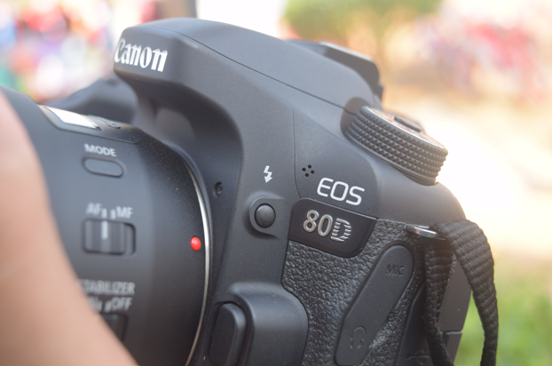
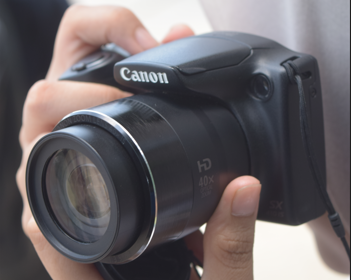

Halo Pembaca, ini adalah blog guide tentang hal-hal dasar pengoperasian perangkat Kamera. Guide ini terdiri dari berbagai bagian dan pada guide pertama ini saya akan memperkenalkan hal-hal dasar pengoperasian Kamera.
Kamera adalah alat untuk mengambil gambar atau video yang disimpan ke dalam sebuah medium, baik digital maupun fisik. Terdapat beberapa jenis kamera, seperti DSLR, Mirrorless dan Compact Camera. Apa bedanya?
Digital Single Lens Reflex atau DSLR merupakan jenis Kamera yang menggunakan cermin untuk memantulkan cahaya yang masuk dari Lensa ke Pembidik/Viewfinder. Jadi, apa yang kita lihat melalui Viewfinder sama dengan apa yang kamera lihat.

Mirrorless merupakan jenis Kamera yang tidak menggunakan cermin untuk dipantulkan ke Viewfinder, melainkan kamera meneruskan cahaya yang ditangkap sensor menuju Viewfinder Elektronik. Umumnya EVF lebih disukai karena apa yang dilihat melalui Viewfinder sama dengan hasilnya.
Compact Camera atau biasa juga disebut dengan Digicam merupakan kamera berukuran kecil. Compact Camera pada dasarnya adalah Mirrorless, namun biasanya Compact Camera tidak bisa mengganti lensa seperti Mirrorless Interchangeable Lens Camera.
